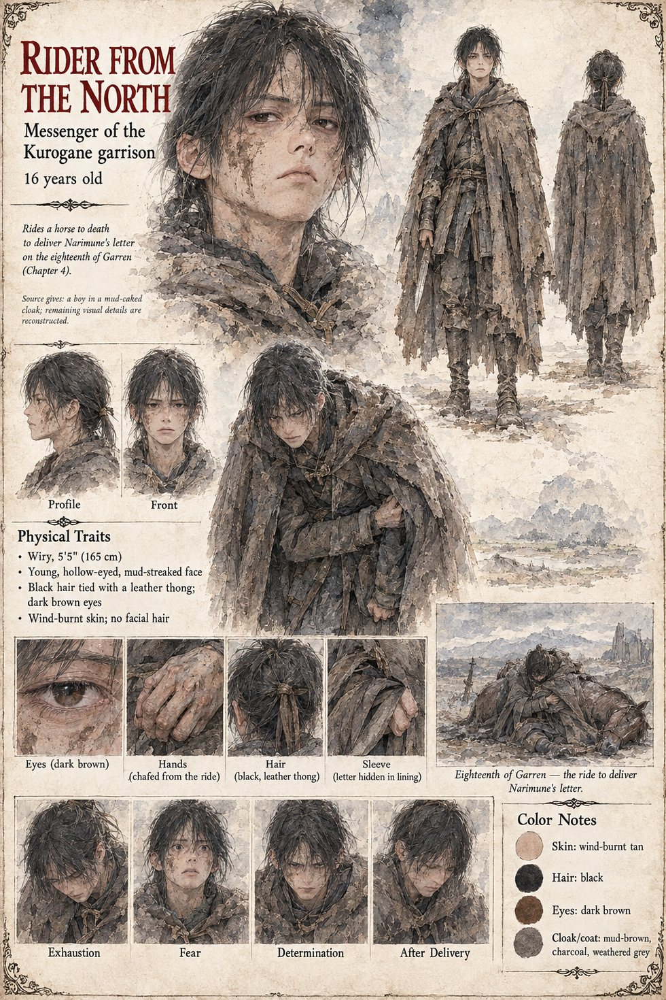

The Rider from the North
Messenger of the Kurogane March garrison at Fort Shirakane · unnamed · about 16 years old by his sheet
A boy in a mud-caked cloak who reaches the Tomobe compound in the third ward on the eighteenth of Garren, two days before the ordeal, having killed a horse to arrive in time. He carries in the lining of his sleeve a letter from Tomobe no Narimune, commander of the Kurogane March garrison at Fort Shirakane and Higaide's elder cousin, the only person alive who has ever seen him cry. The letter is four lines long. It says that a man who walks into an ordeal because the Minister has built one is not proving anything; that the garrison has been told to expect a guest; that three horses will wait at the Northern Gate until the hour of the Rat on the nineteenth; and, in a last line entirely characteristic of its writer, that old One-Eye would certainly have told him that a man with two swords should be able to find the door.
Higaide laughs once, with a sound like a cough, and does not go. The Law holds that a hand which fled had spoken, and under the Sixth Article a fugitive's kin forfeit the estate; and, more simply, he does not believe it necessary. He has signed an order of the day, a child has died on it, and if the kami wish to be consulted he sees no reason to make them chase him through the snow. The rider is given no name, no reply to carry, and no later scene, and nothing is said of the three horses. When the Court's second summons reaches the fort, Narimune answers in four lines built from the same sentences and ending that the door is open, which the histories count as the first line of the Rising of the Northern Gate. He is not the boy of sixteen on the north wall who later shoots Narimune; the sixteen years on his own sheet are its own, and so are its wiry build, hollow eyes and black hair tied with a leather thong.